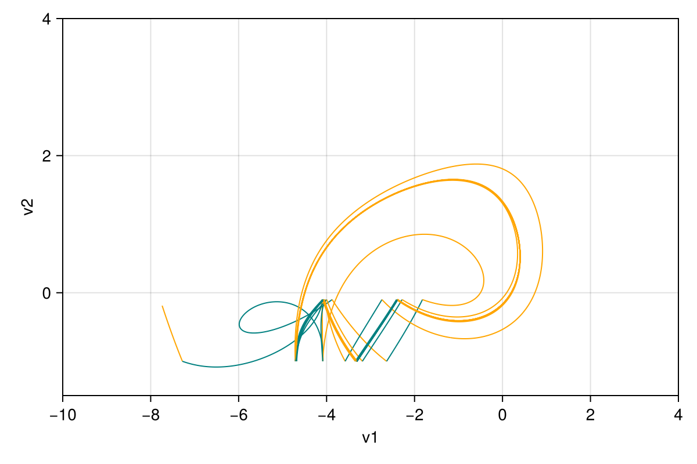
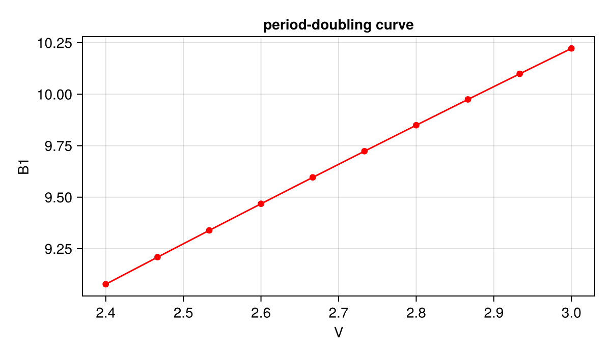

Forced Alpazur oscillator
A piecewise-smooth system with hysteresis. The circuit switches between two smooth vector fields, alp_1 and alp_2 (different conductance $g$ and bias $B$):
\[\dot v_1 = -k v_1 - v_2 + V_0 + V \cos(\omega t), \qquad \dot v_2 = v_1 + (1 - g) v_2 - v_2^3 / 3 + B,\]
alp_1 hands over to alp_2 when $v_2$ falls below $-1$ and alp_2 hands back when $v_2$ rises above $-0.1$. Time is the third state variable. The stroboscopic Poincaré map $(v_1, v_2) \to (v_1, v_2)$ after one forcing period is built from eight modes (Miino 2024): the two vector fields, a time reset and the projections for each of them. One iteration can end in p1 or p2, depending on the vector field active at the section, and the next iteration starts from there (end_modes).
Python counterpart: examples/forced_alpazur.py of mappy-ds.
using MappyDS, CairoMakie, StaticArrays
alp_1 = VectorField(3; name = :alp_1) do y, p
v1, v2, t = y
return SVector(
-p.k * v1 - v2 + p.V0 + p.V * cos(p.omega * t),
v1 + (1 - p.g1) * v2 - v2^3 / 3 + p.B1,
one(t),
)
end
alp_2 = VectorField(3; name = :alp_2) do y, p
v1, v2, t = y
return SVector(
-p.k * v1 - v2 + p.V0 + p.V * cos(p.omega * t),
v1 + (1 - p.g2) * v2 - v2^3 / 3 + p.B2,
one(t),
)
end
border_1 = Border((y, _) -> y[2] + 1.0, 3; direction = -1, name = :border_1)
border_2 = Border((y, _) -> y[2] + 0.1, 3; direction = 1, name = :border_2)
poin_sec = Border((y, p) -> y[3] - 2pi / p.omega, 3; direction = 1, name = :poin_sec)
poin_sec_reset = Mapping((y, p) -> y - SVector(0, 0, 2pi / p.omega), 3; name = :poin_sec_reset)
lift = Mapping((y, _) -> SVector(y[1], y[2], zero(y[1])), 2, 3; name = :lift)
project = Mapping((y, _) -> SVector(y[1], y[2]), 3, 2; name = :project)Mapping(project, dom_dim = 3, cod_dim = 2)The continuous modes name their successors per border, so the rule does not depend on the order of borders.
tol = (reltol = 1.0e-8, abstol = 1.0e-10)
pmap = PoincareMap(
[
ContinuousMode(:alp_1, alp_1; borders = (border_1, poin_sec), tol...),
ContinuousMode(:alp_2, alp_2; borders = (border_2, poin_sec), tol...),
DiscreteMode(:pr1, poin_sec_reset),
DiscreteMode(:pr2, poin_sec_reset),
DiscreteMode(:p1, lift),
DiscreteMode(:pinv1, project),
DiscreteMode(:p2, lift),
DiscreteMode(:pinv2, project),
],
Dict(
:p1 => :alp_1,
:p2 => :alp_2,
:alp_1 => Dict(:border_1 => :alp_2, :poin_sec => :pr1),
:alp_2 => Dict(:border_2 => :alp_1, :poin_sec => :pr2),
:pr1 => :pinv1,
:pr2 => :pinv2,
:pinv1 => :p1,
:pinv2 => :p2,
),
:p1,
[:p1, :p2],
)
params = (k = 0.1, g1 = 0.2, g2 = 2.0, B1 = 1.3, B2 = 5.0, V0 = 0.0, V = 2.4, omega = 1.26)
y0 = [-7.739219543281, -0.188608176591]2-element Vector{Float64}:
-7.739219543281
-0.188608176591Orbit
alp_1 is drawn in orange and alp_2 in teal:
styles = Dict(:alp_1 => LineStyle(; color = :orange, alpha = 1.0), :alp_2 => LineStyle(; color = :teal, alpha = 1.0))
res = image_detail(pmap, y0, params; n = 20, jacobian = false, trajectory = true)
fig = Figure(; size = (600, 400))
ax = Axis(fig[1, 1]; xlabel = "v1", ylabel = "v2", limits = (-10, 4, -1.5, 4))
plot_trajectory(res.trajectory; ax, styles)
fig
println("state after 20 iterations: $(res.y) (in $(end_mode(res)))")state after 20 iterations: [-1.6500097952276174, -0.3393868923475403] (in p1)Interactive viewer (a click restarts in alp_1; p switches between V and B1):
using GLMakie
config = PlotConfig(;
xlim = (-10.0, 4.0), ylim = (-1.5, 4.0), xlabel = "v1", ylabel = "v2",
param_keys = [:V, :B1], param_index = 2,
trajectory_style = styles, point_style = styles,
)
plot2d(pmap, y0, params, config)Fixed point, continuation and period doubling
y0 is not periodic at these parameters; the search converges to the stable fixed point, which switches vector fields several times per period. Its multipliers stay small up to $B_1 \approx 8.3$; it is continued up to $B_1 = 9$ where one of them approaches $-1$, and the period-doubling bifurcation ($B_1 \approx 9.0777$) is located from there.
res1 = image_detail(pmap, y0, params)
println("T(y0) = $(res1.y), mode history $(res1.mode_history)")
cycle = find_cycle(pmap, y0, params)
println("fixed point at B1 = $(params.B1): $(cycle.y)")
steps = trace_cycle(pmap, cycle.y, params, :B1, 9.0; resolution = 20)
last1 = steps[end]
println("traced $(length(steps)) steps to B1 = $(last1.params.B1); multipliers $(last1.info[:eigvals])")
bf = find_local_bf(pmap, last1.y, last1.params, :B1, pi)
println("period doubling at B1 = $(bf.params.B1), y = $(bf.y)")T(y0) = [-2.7212680871395, -0.9562623820514261], mode history [:p1, :alp_1, :alp_2, :alp_1, :alp_2, :alp_1, :pr1, :pinv1, :p1]
fixed point at B1 = 1.3: [-1.6500097952384325, -0.33938689234252273]
traced 20 steps to B1 = 9.0; multipliers ComplexF64[-0.7410817800309355 + 0.0im, -0.0002061592419771996 + 0.0im]
period doubling at B1 = 9.077654740188734, y = [-7.038401880436775, -1.4454824438594405]The bifurcation point is continued in the $(V, B_1)$ plane while $V$ increases to 3:
curve = trace_local_bf(pmap, bf.y, bf.params, :B1, bf.theta, :V, 3.0; resolution = 10)
println("period-doubling curve ($(length(curve)) points):")
println(" V B1")
for s in curve
println(" $(round(s.params.V; digits = 5)) $(round(s.params.B1; digits = 5))")
endperiod-doubling curve (10 points):
V B1
2.4 9.07765
2.46667 9.20884
2.53333 9.33898
2.6 9.46809
2.66667 9.5962
2.73333 9.72333
2.8 9.84949
2.86667 9.97471
2.93333 10.09901
3.0 10.22239fig = Figure(; size = (600, 350))
ax = Axis(fig[1, 1]; xlabel = "V", ylabel = "B1", title = "period-doubling curve")
lines!(ax, [s.params.V for s in curve], [s.params.B1 for s in curve]; color = :red)
scatter!(ax, [s.params.V for s in curve], [s.params.B1 for s in curve]; color = :red)
fig
This page was generated using Literate.jl.